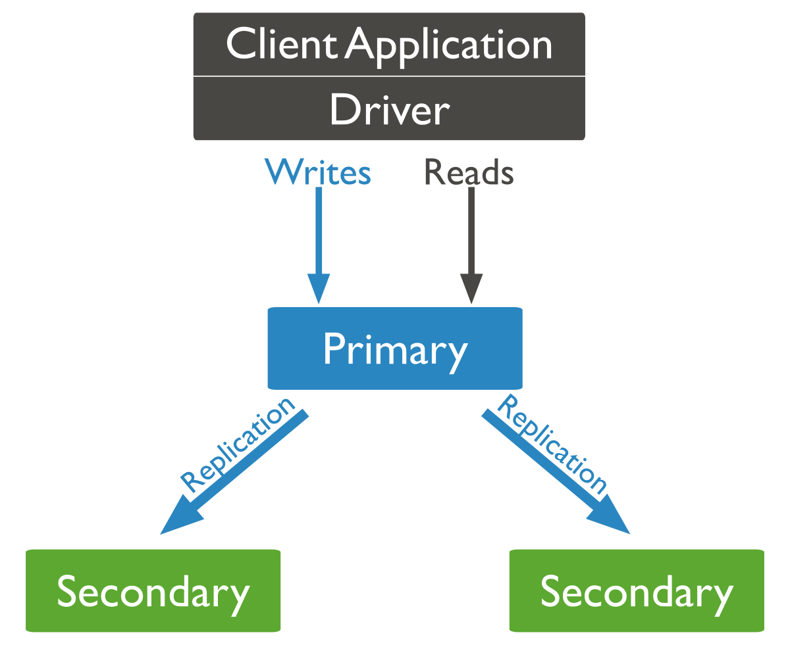
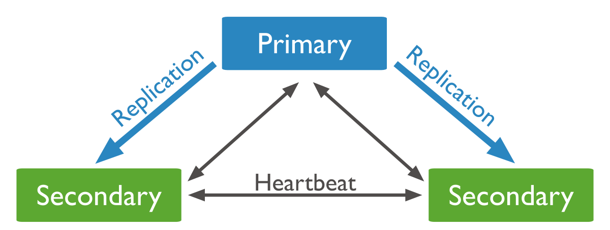
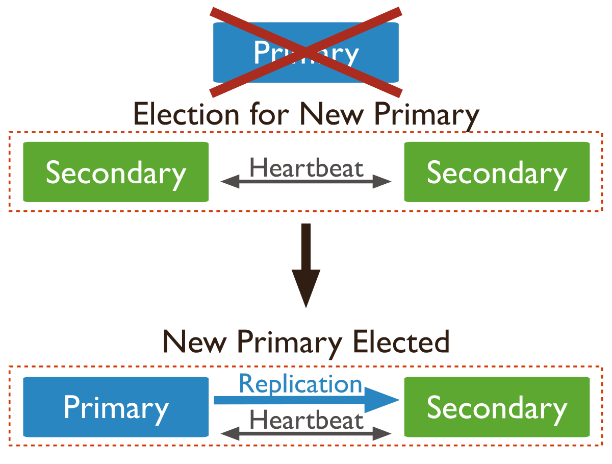

DOs and DON'Ts
Jeremy Mikola
jmikola
Topics
- Schema Design
- Write Operations
- Reading and Querying
- Replication and Sharding
- Deployment and Ops
- Object Document Mappers

Schema Design
Make the most of your indexes
- Kill 2+ birds with one stone
- Compound and multi-key indexes
- Mind your read/write ratio
- Ensure query selectivity
Getting Your Data
into MongoDB
And keeping it there…
Further Reading
Reading and Querying
Aggregation Framework
Replication and Sharding
Replication
What does replication do for us?
Replication provides failover recovery
What does sharding do for us?

Sharding provides horizontal scalability


Right-balanced Access

Random Access

Segmented Access
Deployment and Ops
Security Checklist
- Enable and enforce authentication
- Configure role-based access control
- Configure TLS/SSL for connections
- Limit network exposure
- Encrypt and protect database files
- Run MongoDB as a dedicated user
- Hardened server and network configuration
Operations Checklist
- Adjust replica set oplog size
- Enable journaling for writes
- Driver connection pooling (if applicable)
- Filesystem choice (XFS and NTFS preferred)
- Tweak operating system configuration
- Schedule and test backup processes
- Monitor database metrics and hardware
Object Document Mappers
ODMs are a great tool
- Employ a real document model
- Framework and library integration
- Accelerate application development
- Abstract the database layer
Watch out for that last one.
Grok your DB and driver before abstracting it.
Be an informed user
- Active Record vs. Data Mapper
- Are changes written with atomic modifiers?
- How is replication and sharding integrated?
- How are references handled?
- How are embedded documents managed?
- Are commands beyond basic CRUD supported?
- Is the driver API available if needed?